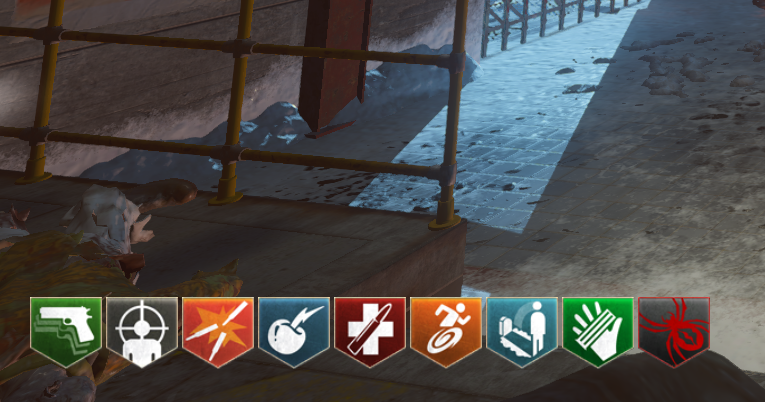
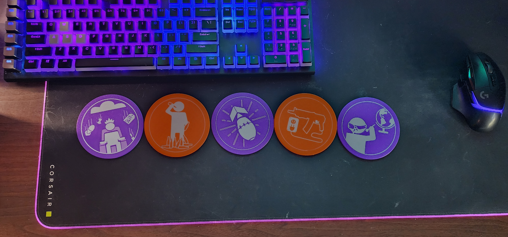
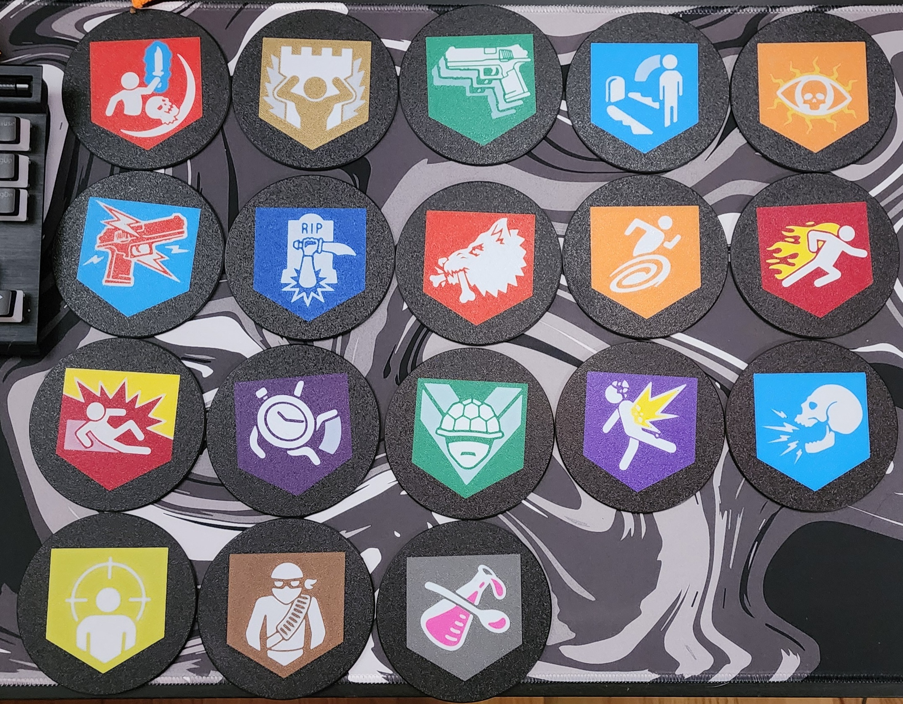
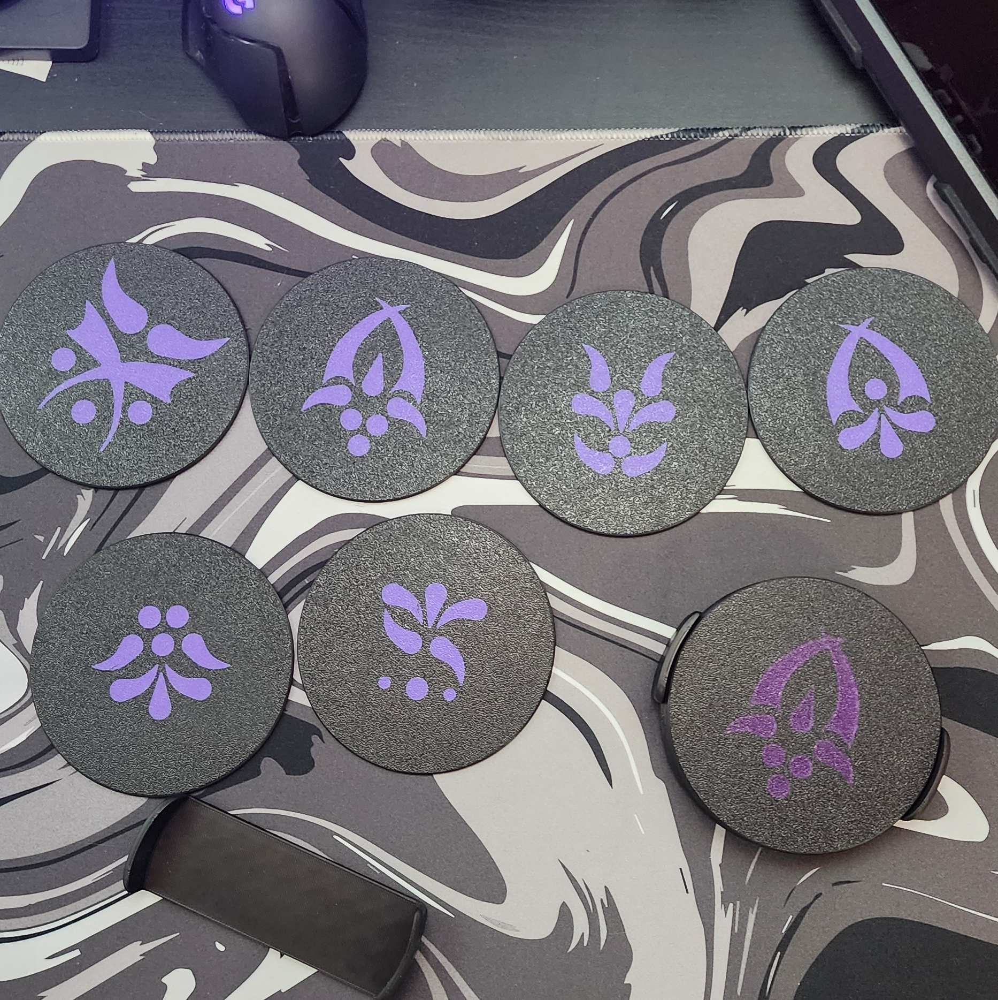
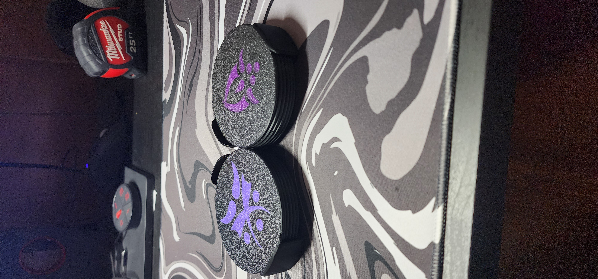
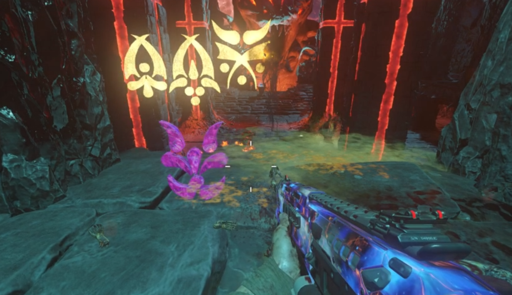
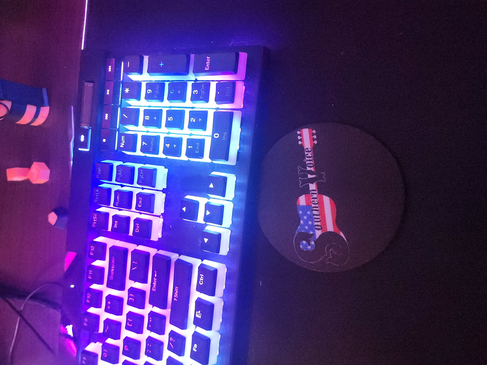

Custom Drink Coasters
August 2025

In the Customized College Logos project, I attempted to make some drink coasters. I wasn't quite happy with how these turned out but I still gifted them instead of throwing them out. My issue was that I made holes for rubber feet (to prevent slipping), but they were visible on the top of the coaster. I have now completely removed these cutouts as I feel that the coasters have a fair amount of grip on their own. If necessary, I could always just add rubber feet afterwards.
The coasters in the main picture are the nine perks that you can get in Call of Duty: Black Ops III Zombies. From the same video game, the purple symbols (found below) are the Apothican symbols from the map "Revelations."
Something pretty cool that I learned by making these coasters is how to further manipulate Bambu Studio to produce colors of filament that I don't own. This is done by making the size of certain shapes or geometry thinner than others. Look at the "Mule Kick" or "Quick Revive" (top left and bottom left of the nine coaster set). I was able to use white PLA filament and have the background bleed into it. So instead of being a solid shape, it has a litte bit of gradient like it does in the orignal image.

Extra designs


I have also made all 18 perk icons from Black Ops 4. I hope to improve a few of the icons (Dying Wish, Winter's Wail, and Death Perception)



